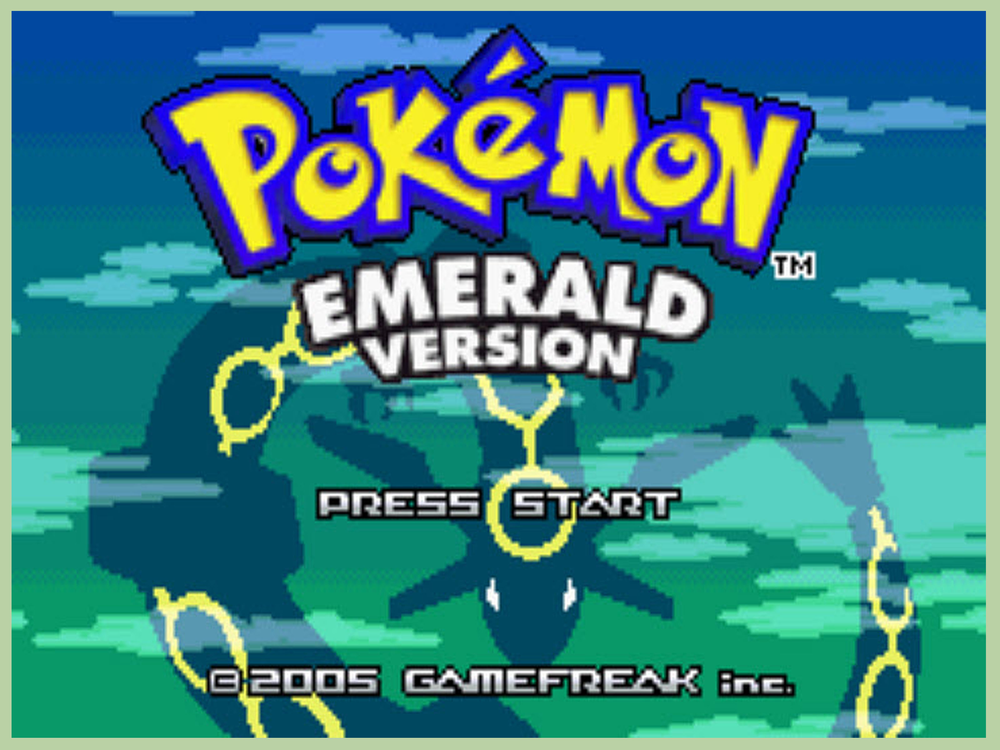

The game I first created represented two sprites and it moving around and transforming the second sprite to different costumes and teleporting randomly. The game I have created as a result depicts a Pokemon battle, displaying a historical battle between the mythical dragon of the Hoenn region and an alien Pokemon species that had been encased within a meteor, sent on its way to destroy Earth. The player with custody of the dragon must defeat the alien or capture it, thus saving the world. I played with the scripts of each sprite, and attack animation, all linking to the main Pokemon performing the attacks. Challenges that ensued mainly included the "stop" script, and the Pokeball capture script. Luckily with the help of Ms. Terry I was able to work around it and now I learned that these scripts must be seperated into other sprites so that one sprite isn't overloaded with too many scripts.
This story is based on the first events of Pokemon Emerald. You start off by talking to a stranger, who later introduces himself as Professor Birch, a Pokemon Professor. Upon confirming your love for Pokemon, he allows you to choose one Pokemon from three, in which you use to battle his daughter or son. Upon attaining victory, you later become the strongest trainer in the region and become the champion. Programming concepts I needed to use in order to create this story would be the skills of Python and redirecting certain decision points into another. Several other skills include the allowance of choices and that the user must tap and enter a letter to confirm their choice. Many problems included one decision point redirecting back to a previous one. We fixed this error by simply redirecting the bad decision point into the beginning, like resetting a game. This story has made me realize that I should stop creating Pokemon-themed projects since I get rather distracted while doing them. There were certain parts in writing this code that only makes me understand it, but not others. I probably should have chosen a more relevant topic for everyone to understand, like the one story about a boy deciding on whether to go to university or college, or a horror story. I especially liked the horror one, as it had a huge amount of suspense and kept me interested. If I could redo this project, I would change the topic entirely, and make the code and story more simple for me and for others.
Links! https://www.google.com/url?sa=i&rct=j&q=&esrc=s&source=images&cd=&cad=rja&uact=8&ved=0ahUKEwjizsP9lrbPAhVS8GMKHWdJDqEQjBwIBA&url=http%3A%2F%2Fimages6.fanpop.com%2Fimage%2Fphotos%2F33900000%2FPokemon-Mystery-Dungeon-PikaWott-pokemon-mystery-dungeon-gates-to-infinity-33901039-500-294.gif&bvm=bv.134495766,d.amc&psig=AFQjCNF7BrzdgWsJGgYzs8fwo6dsvJhg8w&ust=1475293561059872 https://www.google.com/url?sa=i&rct=j&q=&esrc=s&source=images&cd=&cad=rja&uact=8&ved=0ahUKEwie3MWo2rfPAhUC1mMKHYWvBfkQjhwIBQ&url=http%3A%2F%2Fjoke-battles.wikia.com%2Fwiki%2FFile%3A8384-Mega-Rayquaza.png&psig=AFQjCNHJ-wy0Rqgw12HgoexQkKA86xtmVg&ust=1475346005410739 https://www.google.com/url?sa=i&rct=j&q=&esrc=s&source=images&cd=&cad=rja&uact=8&ved=0ahUKEwi29Ia-2rfPAhVK32MKHbLrB-MQjhwIBQ&url=http%3A%2F%2Fpokemon.wikia.com%2Fwiki%2FFile%3APok%25C3%25A9mon_ORAS_Mega_Rayquaza_VS_Deoxys.png&bvm=bv.134495766,d.cGc&psig=AFQjCNFz5a10qTPy97NB6EW3336mRk0lRg&ust=1475346054901976 https://www.google.com/url?sa=i&rct=j&q=&esrc=s&source=images&cd=&cad=rja&uact=8&ved=0ahUKEwjzy-XI2rfPAhVW5GMKHaKmAFMQjhwIBQ&url=http%3A%2F%2Fpokemon.wikia.com%2Fwiki%2FPiplup&bvm=bv.134495766,d.cGc&psig=AFQjCNFJFG32PdbdHZcfWavCuHzCTi1sNw&ust=1475346076787531 https://www.google.com/url?sa=i&rct=j&q=&esrc=s&source=images&cd=&cad=rja&uact=8&ved=0ahUKEwjeo_ba2rfPAhVU02MKHQ7HAgQQjhwIBQ&url=http%3A%2F%2Fkurld.com%2Fstars.html&bvm=bv.134495766,d.cGc&psig=AFQjCNEyf17pTec74wX_g8ScqX7qM20Nwg&ust=1475346109854373